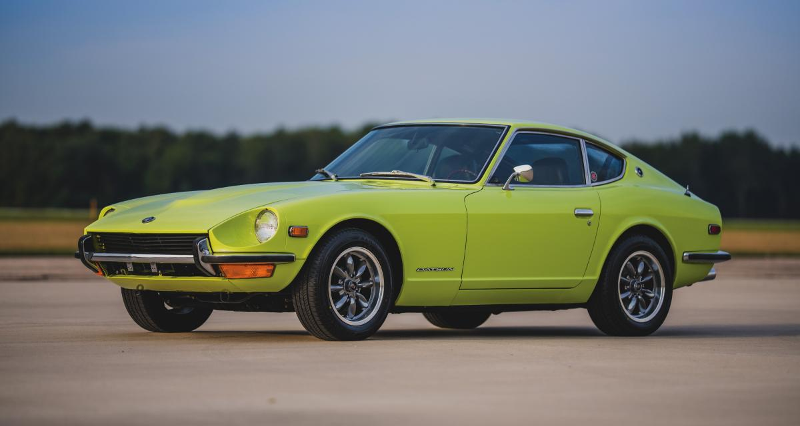
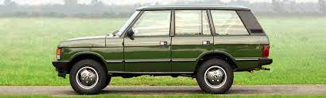
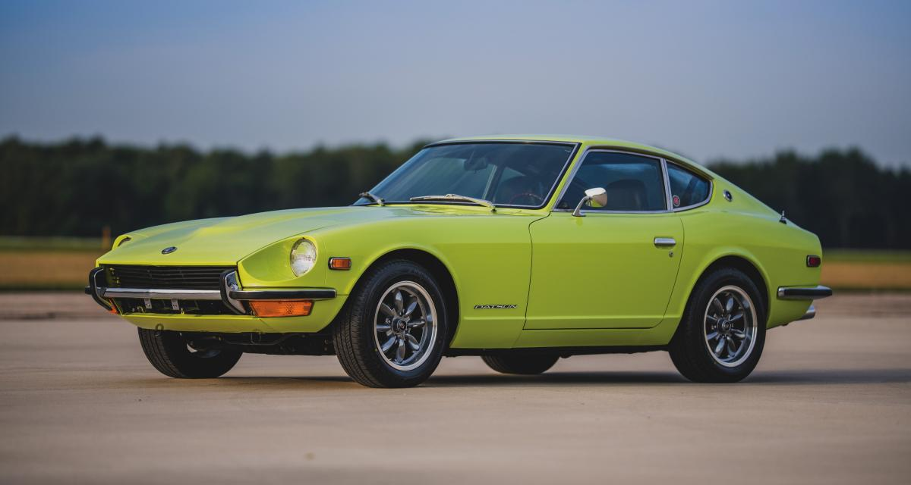
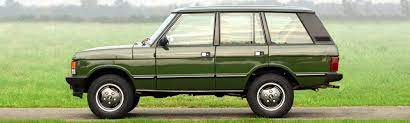
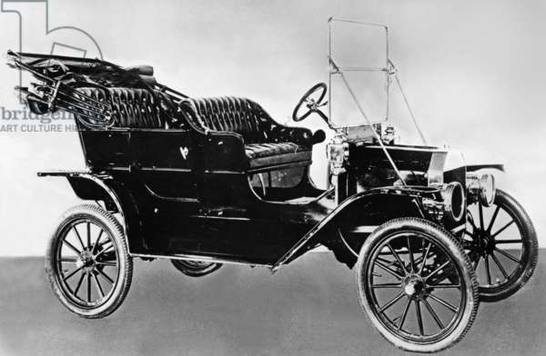
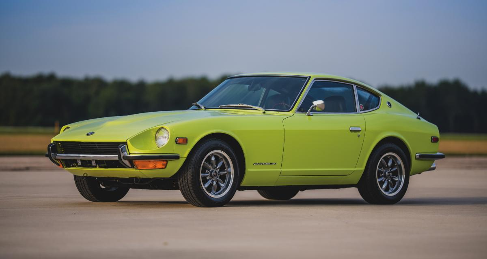
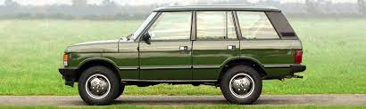

1970-73 : Datsun 240Z.
Une voiture de sport fiable et abordable.

1970 à nos jours : Range Rover.
Considéré comme le meilleur 4x4 du monde.

1970-73 : Datsun 240Z.
Une voiture de sport fiable et abordable.

1970 à nos jours : Range Rover.
Considéré comme le meilleur 4x4 du monde.

Les premières voitures sont plutôt chères, donc inaccessibles à la majeure partie de la population. Tout change en 1908, lorsque Henry Ford démarre la production en série de la Ford T, surnommée plus tard la “ Lizzie ”, qui révolutionne l’industrie automobile. Elle est peu onéreuse, polyvalente et facile d’entretien. Même ceux dont le revenu est modeste peuvent en acheter une (Les premières Ford T coûtaient 850 $, mais en 1924 on pouvait en acheter une flambant neuve pour 260 $. En 19 ans de production, la Ford T a été construite à 15 millions d’exemplaires.). D’après Les voitures célèbres du XXe siècle (angl.), c’est la Ford T “ qui a mis l’Amérique et finalement le monde sur roues ”.
Aujourd’hui, près d’un siècle plus tard, nombreux sont ceux qui voient en l’automobile une nécessité plus qu’un luxe. Une étude publiée dans le quotidien londonien The Independent montre d’ailleurs que certains utilisent leur voiture même pour des trajets inférieurs à un kilomètre.
Les progrès techniques ont permis d’accroître non seulement la vitesse des véhicules, mais également leur sécurité. Ces dernières années, on a effectivement enregistré une diminution des accidents mortels dans de nombreux pays. Certains acheteurs privilégient d’ailleurs la sécurité à l’esthétique. Grâce à une amélioration des zones déformables, certaines parties du châssis absorbent le plus gros de l’impact, tandis que la structure la plus proche du conducteur et des passagers forme un habitacle sécurisé. Le système d’antiblocage des freins assure une meilleure maîtrise du véhicule sur un sol glissant. La ceinture de sécurité trois points protège la poitrine et les hanches, tandis que l’airbag empêche la tête de heurter le volant ou le tableau de bord en cas de collision.
Bien entendu, rien ne remplace de bonnes habitudes de conduite. “ Il est inutile de construire des voitures plus sûres si l’on ne conduit pas prudemment ; même la technologie la plus avancée en matière de sécurité ne pourra vous sauver si vous enfreignez certaines lois physiques ”, fait remarquer El Economista, de Mexico.
De nos jours, certains véhicules ressemblent à de véritables habitations sur roues. Beaucoup sont équipés d’un lecteur de disques compacts, d’une télévision, d’un téléphone, de boutons pour contrôler indépendamment le niveau sonore et la température à l’avant et à l’arrière. Certaines voitures disposent également d’un système de positionnement global par satellite, qui permet au conducteur de trouver la route la plus pratique pour parvenir à destination. Il existe des systèmes qui donnent des renseignements de dernière minute sur les problèmes de circulation. Naturellement, posséder le dernier gadget ou le modèle de voiture le plus récent est devenu pour beaucoup un symbole d’appartenance sociale, phénomène que les fabricants et publicitaires ont bien compris.
Comme nous l’avons vu, l’automobile a beaucoup évolué depuis son apparition il y a plus d’un siècle. Utilisée de manière responsable et prudemment, elle se révèle un moyen de locomotion efficace pour le voyage d’affaires comme pour le voyage d’agrément.
Voici maintenant quelques dates clés sur l'automobile
1970-73 : Datsun 240Z.
Une voiture de sport fiable et abordable.

1970 à nos jours : Range Rover.
Considéré comme le meilleur 4x4 du monde.
